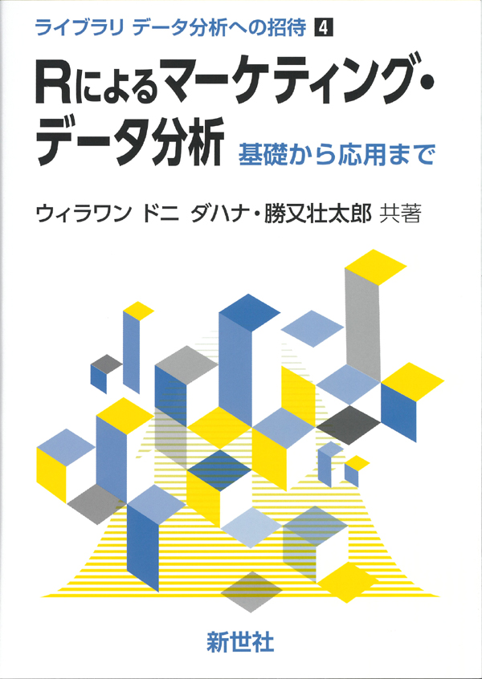

プレゼミとは
2023年度から新たに開講される「プレゼミ」とは、3年次から始まる「専門演習」(以下、ゼミ)で専門性を深める前に、広い知識を獲得し、ゼミでの研究に深みを持たせるための小集団科目です。 松浦プレゼミでは，経営学分野で実証研究を行うために必要な統計学・計量経済学の基礎とそれを実装するプログラミング言語Rについて学習することで、組織論やマーケティング、ファイナンスや会計で活発に行われている「実証研究」を行う基礎知識を手に入れることを目指します。 この資料は、そのための教材として、以下の教科書をベースに作成されています。
- Rによる計量政治学 (中級)
- Rによるマーケティング・データ分析 (上級)
- 経営学のための統計学・データ分析 (初級)


松浦のプレゼミでは、25名の学生が集まって静かに教員の講義を聴く、といったようなことはしません。 むしろ、授業を受ける前に学生が自分で教科書や資料を読んで宿題をやり、そして教室で発表をして議論をする、という形式をとります。 いわゆる「反転授業」というやつです。 反転授業を効果的に行うためには、授業を受ける前の準備が重要です。 授業を受ける前に、このウェブ資料と教科書の該当箇所を読んで、練習問題に取り組む、ということをしておいてください。
教科書・参考書について
プレゼミのメインテキストは浅野・矢内 (2020)「Rによる計量政治学」オーム社です。 このウェブ資料も、このテキストをベースに作成されています。 サブテキストであるウィラワン・勝又 (2023)「Rによるマーケティング・データ分析」新世社、の一部の内容も含まれています。 重要参考図書として、久保克行 (2021)「経営学のための統計学・データ分析」東洋経済、もオススメです。 この資料は基本的に松浦が自分の勉強用に作成したノートのため、誤りや不備が含まれている可能性が高いです。ミスなどを見つけ次第、松浦まで報告してくれると助かります。 またこのノートは、浅野・矢内 (2020)やウィラワン・勝又 (2023)の内容を網羅しているわけではないので、このノートを使う場合は教科書を手元において、学習することをおすすめします。
教科書選定の理由
なぜ会計学を専門とする松浦のプレゼミで、メインの教科書が「Rによる計量政治学」なのかというと、このテキストが社会科学の一分野である政治学という経営学部生にとっても関連のある興味深い題材を用いて、計量経済学の基礎から応用までをRで実装するための知識を習得できるものだからです。 とりわけ第1部の第2章「研究テーマの選び方」と第3章「理論と仮説」は、卒業論文を書く際にも非常に重要となる内容ですので、全経営学部生によんでもらいたい内容です。
第4章「Rの使い方」と第5章「Rによるデータ操作」は、本書の学習に必要な必要最小限の内容ですので、他の教科書やウェブサイトを参考にして、より詳細な内容を学習したほうが良いですが、この内容を理解し、使えるようになれば、MS Excelを使わずにRだけで分析できるようになるでしょう。
第6章から第15章までが、統計学から計量経済学の内容となります。 おおよそ、代表的な統計量の計算や、グラフを使ったデータの理解、標本(sample)を用いた母集団(population)の推定や仮説検定、複数の統計量の関係性の理解、因果関係を分析する手法の1つである回帰分析の基礎と応用、2値選択の問題を推定するためのロジスティック関数の使い方などを学習します。
ここまでの内容の学習にプレゼミ15回のうち、第2回目から第11回目のおおよそ10回分を使います。 12回〜14回の3回は多変量解析手法として因子分析やクラスター分析、機械学習を用いた判別モデルとして決定木分析を学習します。 最後の講義となる第15回目では、今まで修得した知識を使って、データ分析を行った結果を発表してもらいます。
2年生終了時点で、これらの内容を修得していれば、卒業論文の分析に必要な知識はほぼ習得できていると考えて良いでしょう。あとは関心のある研究テーマを選ぶために、面白そうな専門演習(ゼミ)に入って、Rと統計学・計量経済学を使った実証研究を楽しんでくれれば、プレゼミの目標が達成されます。
プレゼミの運営方法について
最初に触れたように、基本的にこのプレゼミは反転授業の形式をとります。 つまり、授業は家で受けて、宿題を大学でやる、という形式です。
具体的には、講義を受ける前に自宅で行う準備として、このウェブサイトと教科書・参考書の該当箇所を読んでおきます。そこで「ここは分かったけど、ここは分からなかった」というところをメモしておきます。 「分からなかった」という点について、具体的にどこが分からなかったのかを明確にすることが重要です。
その上で、大学にでは、分からなかったところを全員で共有し、分からなかった論点を潰していきます。 そのうえで宿題をやります。授業中に与えられるデータを使って、具体的に分析をやってみて、その結果を講義で発表してもらいます。 宿題の内容は、講義中に指示します。
プレゼミのスケジュール
プレゼミのスケジュールはおおよそ以下の通りです。
- 第1回 プレゼミの概要とメンバー紹介
- 第2回 実証会計学、研究テーマの選び方・理論と仮説
- 第3回 Rの使い方とRによるデータ操作
- 第5回 記述統計とデータの可視化・視覚化
- 第6回 統計的推定と統計的仮説検定
- 第7回 変数間の関連性
- 第8回 回帰分析の基礎と統計的推定
- 第9回 回帰分析の応用
- 第10回 交差項の使い方
- 第11回 ロジスティック関数
- 第12回 質問紙の作成と測定尺度
- 第13回 因子分析
- 第14回 クラスター分析・決定木(時間があれば)
- 第15回 成果報告会 (報告者は6名程度を想定)
プレゼミでの使用ソフトウェアについて
このウェブ資料は、Posit社(以前はRstudio社)が開発したQuartoというソフトウェアを使って作成されています。Quartoとは、RMarkdownの記法で書かれたテキストファイルを、knitrというソフトウェアを介して、HTMLやPDF、MS Word、EPUBなどのファイルを作成するためのソフトウェアです。
最大の特徴は、MS ExcelとMS Wordのようにデータを分析する場所と文章を書く場所が別々ではなく、一つの画面の中でデータ分析とレポート・論文執筆を同時に行える、というものです。
また、Rだけでなく、PythonやJuliaといった他のプログラミング言語も文章内に埋め込むことができるため、データ分析と文章執筆を統合させる環境として非常に優れています。
プレゼミでも、Quartoを使って最終レポートの作成を行う予定です。 Quartoは今も開発が進んでいる新しいレポート作成ソフトウェアなので、情報が少ないことが難点ですが、公式サイトと私たちのRを見れば大抵のことは分かります。
プレゼミの準備
プレゼミが始まるまでに準備しておいてほしいことは、プログラミング言語Rのセットアップです。 具体的には、RとRstudioが使えるようにしておくことが必要です。
RとRstudioを使う方法は2つあります。
- パターン1：自分のPCにRなどをインストールする
- パターン2：ブラウザ上でR/Rstudioを使う
パターン1：自分のPCにRなどをインストールする人向け
自分のPCにRをセットアップするメリットには、
- インターネットに接続していなくてもRを使える
- 処理速度が速い
- データの保存場所が自分のPCになるので、データの管理がしやすい
といったものがあります。逆にデメリットとして、
- インストールに時間と手間がかかる
- 自分のPCにインストールするので、PCの容量を圧迫する
- ディレクトリの管理が必要になる
といったものがあります。 ただ、今後もRを使っていくことを考えると、自分のPCにRをインストールしておくことをおすすめしますが、やはり学生が持っているコンピュータの環境が様々なので、トラブルも起こりやすいです。 ただ、以下の手順に従ってインストールすれば、大抵の場合は問題なくインストールできると思います。
RとRstudio
RとRstduioを自分PCにインストールする際に、以下のウェブサイトが超参考になります。 自分のPCのOS(だいたいWindowsかMacOSか)に応じて、次の矢内先生の資料を見ながらインストールしてください。
Visual Studio Codeの使い方
教科書では、Rstudioの説明をしていますが、RstudioはR専用のIDE（統合開発環境）で、R以外の言語を書くことはできませんし、少々重たいです。 そこでここでは、Microsoft社のVisual Studio Codeを使ってRを書く方法を説明します。これは完全に趣味の世界なので、興味が無ければRstudioを使ってください。
マイクロソフト社のウェブサイトから、自分のPCのOSに合わせて、Visual Studio Codeをインストールしてください。
まずGoogle等で「Visual Studio Code」と検索して、オフィシャルサイトにアクセスします。

そして、「Visual Studio Codeをダウンロードする」をクリックすると、次のページにいきます。

ここから自分に合ったOSを選んで、ダウンロードしてください。 詳しい人なら、下の小さな項目から、適切なものをえらんでください。 MacBookでM2チップを使っている人は、MacのApple siliconのzipをダウンロードして、Zipファイルを展開してインストールしてください。
Quarto
次に、RstudioやVisual Studio Codeで、レポートや論文を書くためのパッケージであるQuartoをインストールします。 QuartoはRstudioを作ったPosit社が開発している文書作成システムなので、Rとの相性もばっちりです。
まずGoogle等で「Quarto」と検索して、オフィシャルサイトにアクセスします。

そして、「Get Started」をクリックすると、次のページにいきます。
ここから自分に合ったOSを選んで、ダウンロードしてください。 インストールが完了すれば、RstudioやVisual Studio Codeで、レポートや論文を書くことができるようになります。
ここまでで、
- R (本体)
- Rstudio (R用IDE)
- Visual Studio Code (R以外の言語も書けるIDE)
- Quarto (レポートや論文を書くためのパッケージ)
のインストールが完了しました。
VS Codeの準備
次に、Visual Studio Code(以下、VS Code)でRのソースコードを書くための準備をします。 VS Codeを開くと、次のような画面が表示されます。 VS Codeは、機能を拡張するために、拡張パッケージをインストールすることができます。 VS Codeを起動して、左のメニューの中の、四角が4つ並んだアイコンをクリックしてください。

VS Codeの左のメニュー上部に拡張パッケージの検索画面が表示されます。 そこに拡張パッケージの名前を入れて、必要なものをインストールしていきます。 以下の拡張パッケージは、Rの分析をするために必要あるいは推奨されるものです。
Japanese Language Pack for Visual Studio Code: VS Codeの日本語化R: とりあえず入れておくQuarto: Quartoを使うために必要
とりあえずこの3つを入れておけば、このプレゼミでは十分です。

フォルダを開く
VS Codeでは、分析に使うCSVファイルや、分析のためのRファイル、レポートや論文を書くためのQuartoファイルを、一つのフォルダにまとめておくと便利です。 分かりやすい場所にフォルダを作成し、好きな名前をつけてください。
VS Codeの上部メニューの中の「ファイル」をクリックして、「フォルダーを開く」をクリックして、先ほど作成したフォルダを選択してください。 すると、左のメニューにフォルダの中身が表示されます。まだ何も入っていなければ、何も表示されません。
VS Codeではフォルダを指定して開いておくと、そこが作業フォルダとなり、Rは常にそのフォルダの中を参照するようになります。
パターン2：ブラウザ上でRを使う人向け
自分のPCにいろいろインストールしなくてもR/Rstudioをブラウザで利用することもできます。 Posit Cloudを使ってウェブ上でRstudioを使えるようにしてください。 Posit Cloudは、Rstudioを作ったPosit社が運営している無料のサービスです。安心してアカウントを作成してください。
アカウントを作成し、ログインすれば、Rstudioをブラウザ上で使うことができます。
事前課題
- R/Rstudioをインストールする、あるいはPosit Cloudにアカウントを作成してログインする
- 教科書「Rによる計量政治学」を入手しておく
自己紹介タイム
総勢25名の松浦プレゼミ1期生による自己紹介を行います。 1人1分で，自分の名前と出身都道府県，好きなもの(何でもOK)を発表してください。